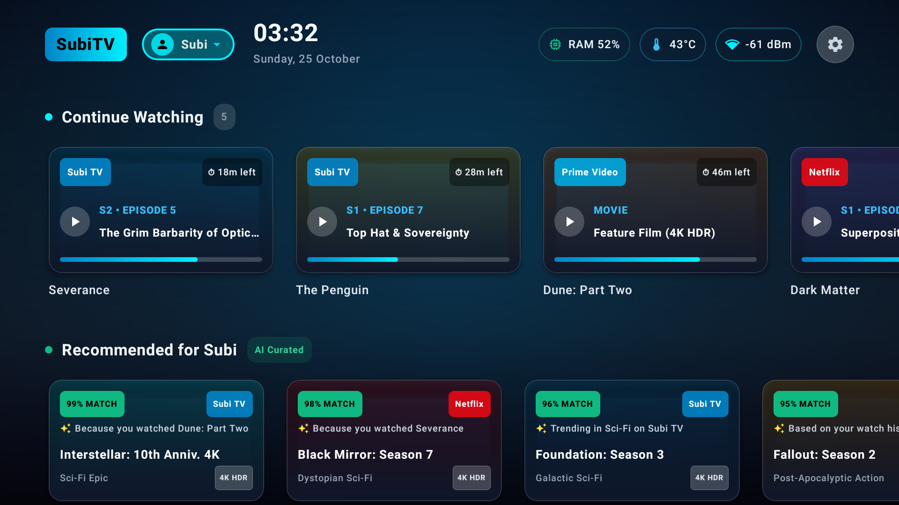
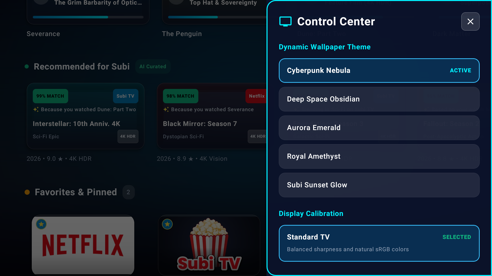
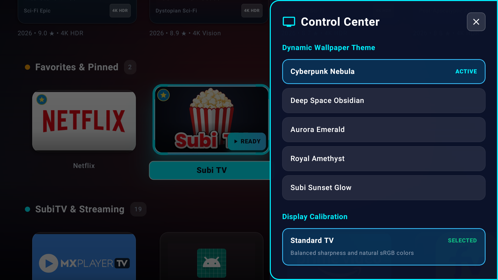
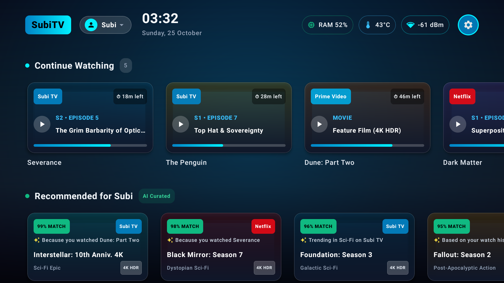
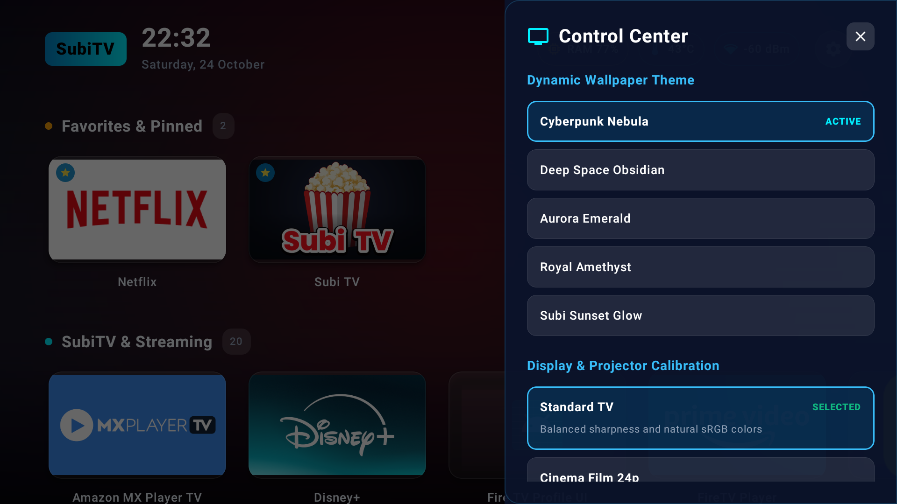
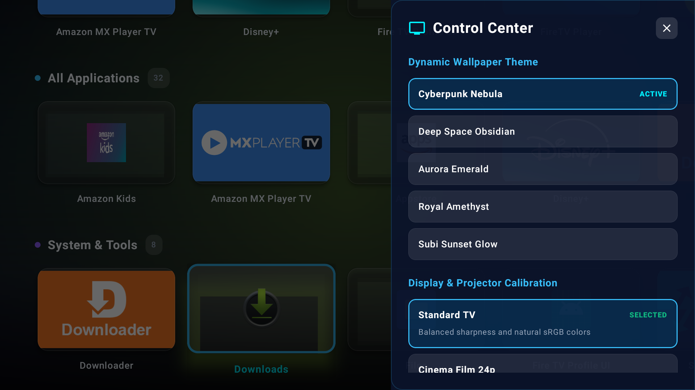

SubiTV Launcher
The ultimate sovereign home screen for Android TV and Amazon Fire TV. Features complete multi-user profiles (Subi, Kids & Family, Cinema Pro, Guest), continuous Season & Episode progress tracking with neon glow bars, intelligent cross-service viewing recommendations based on installed streaming services, tvOS ambient color blooming, and a live System Health HUD.
Engineered for Every Viewer in the House
Personalized profiles, continuous episode tracking, and AI curated recommendations.






Smart Viewing Intelligence. Zero Subscriptions.
A modern television launcher designed around how people actually stream.
Multi-User Profiles
Separate watch histories, custom accent colors, and tailored recommendations for every viewer. Seamlessly toggle between adult, cinema, and protected kids profiles right from the top status bar.
Episode Progress Tracking
Never wonder where you left off. Tracks exact season, episode number, episode title, and remaining minutes across Subi TV, Netflix, Prime Video, and YouTube with radiant neon progress bars.
Cross-Service Recommendations
Intelligently suggests movies and shows based on what the active profile has been watching, prioritizing content on installed streaming apps with match scores and 4K HDR tags.
Dedicated Kids Mode
Switching to the Kids profile automatically filters the home feed into family-friendly animations and comedies, keeping adult content completely out of sight.
tvOS Dynamic Color Bloom
Our palette engine dynamically samples the dominant hue of the highlighted episode or app card, bathing your TV wall in an ambient cinematic glow.
Live System Health HUD
Monitor TV vitals in real time: available RAM percentage, internal SoC temperature in °C, and Wi-Fi RSSI signal strength (dBm) or Gigabit Ethernet status.
How to Install & Set as Default
Quick steps to get SubiTV Launcher running on Amazon Fire TV or Google TV.
Download & Install the APK
On your TV, install via the Downloader app by typing the short URL iamgreater.net/downloads/subitv-launcher-latest.apk, or push directly via ADB:
adb install -r subitv-launcher-latest.apk
Enable Accessibility Home Interceptor (Fire TV)
To trap the Fire TV remote Home button and return directly to SubiTV Launcher:
Go to Settings → Accessibility → SubiTV Launcher Home Interceptor and toggle it ON.
Alternatively, enable it via ADB:
adb shell settings put secure enabled_accessibility_services net.iamgreater.subitvlauncher/.services.SubiTvHomeInterceptorService
Select Profile & Stream Seamlessly
Launch SubiTV Launcher. Select your user profile from the top bar to restore your Continue Watching episodes, explore personalized recommendations, and customize your 4K backdrop themes.